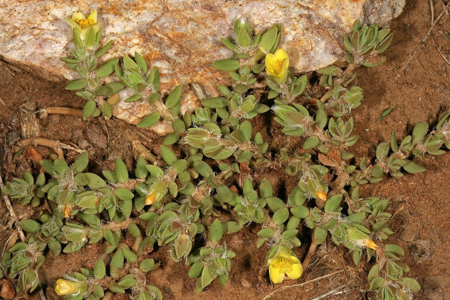

चिकन वीडChicken Weed
Portulaca quadrifida · Portulacaceae · FLR-0381

- Scientific name वैज्ञानिक नाम
- Portulaca quadrifida L.
- Family कुल
- Portulacaceae
- Hindi हिंदी
- चिकन वीड
- Local names स्थानीय नाम
- chicken weed
- Status here यहाँ की स्थिति
- native
- Movement आवागमन
- Resident, here all year
- Known from कहाँ दर्ज
- Others have published records from the wider Awadh–Purvanchal plain, none yet from Basti–Ayodhya अवध–पूर्वांचल से दूसरों के प्रकाशित अभिलेख, बस्ती–अयोध्या से अभी नहीं
- IUCN IUCN
- not evaluated
- Review समीक्षा
- not yet reviewed
When to look कब देखें
Expected mainly in June, July, August, September, October, November. मुख्यतः जून, जुलाई, अगस्त, सितंबर, अक्टूबर, नवंबर में अपेक्षित।
Uses and possibilities उपयोग और संभावनाएँ
“Traditional medicine” means a documented traditional use, not a claim that it works. Nothing on this page is medical advice.
Drawn from the documented uses in the profile below, where each is labelled traditional, current or a research lead. All uses →
Tell it apart from इनसे अलग पहचानें
चिकन वीड / Chicken Weed
Portulaca quadrifida L. — Portulacaceae
चिकन वीड — यह जमीन पर कालीन की तरह फैलने वाला एक छोटा, गूदेदार (मांसल) जंगली खरपतवार है जिसकी लाल-हरी तने की गांठों पर सफेद रेशमी बालों का छल्ला होता है। इसके पत्ते छोटे, अंडाकार और रसदार होते हैं। कड़ी धूप में इस पर नन्हे पीले रंग के चार पंखुड़ियों वाले फूल खिलते हैं। यह पोषक तत्वों और नमी से भरपूर एक लचीला जंगली पौधा है।
Quick Identification त्वरित पहचान
| Feature | Description |
|---|---|
| Habit | Delicate, diffuse, prostrate annual succulent herb forming dense spreading mats |
| Stems | Slender, fleshy, reddish or purplish, rooting freely at nodes |
| Nodal hair | Conspicuous ring of dense, white silvery woolly hairs encircling each stem node |
| Leaves | Opposite, fleshy, ovate to oblong, very small, flat with rounded apices |
| Flowers | Solitary, terminal, bright yellow with four petals, surrounded by woolly hairs |
Diminutive creeping succulent distinguished from common purslane by its tiny opposite leaves, dense rings of silvery white hairs at the stem nodes, and yellow four-petaled flowers.
Field tip: Look on sandy sunny paths and gravelly courtyards for creeping red-stemmed mats with tiny succulent leaves and white fuzzy tufts at every joint.
हिंदी: जमीन पर फैली गूदेदार लाल टहनियों, गांठों पर सफेद रेशमी बालों के छल्ले, छोटे रसदार पत्तों और चार पंखुड़ियों वाले पीले फूलों से यह आसानी से पहचानी जाती है।
Morphology आकारिकी
| Feature | Description |
|---|---|
| Stems | Filiform, succulent, reddish-pink, trailing and rooting at nodes, forming mats |
| Nodal appendages | Dense whorl of white glistening hairs around nodes and inflorescence |
| Leaves | Opposite, subsessile, ovate-oblong, fleshy, green or purplish-tinged |
| Inflorescence | Terminal, solitary, sessile, surrounded by four involucral leaves and dense wool |
| Corolla | Bright yellow, with four obovate petals; stamens usually eight |
| Measurement | Measurement not available in consulted open sources. |
A delicate prostrate succulent herb with slender reddish stems that root at the nodes. Each node is encircled by a prominent ring of white hairs. The leaves are small, opposite, fleshy, and ovate. The bright yellow flowers are terminal and sessile, nestled within a four-leaved involucre surrounded by woolly hairs. The petals are four. The fruit is a conical circumscissile capsule containing minutely tubercled black seeds.
हिंदी: इसके लाल तने जमीन पर रेंगकर जड़ें जमाते हैं। हर जोड़ पर सफेद बालों का गुच्छा होता है। पत्ते छोटे और गूदेदार होते हैं। फूल पीले रंग के चार पंखुड़ियों वाले होते हैं और फल का ढक्कन कटोरी की तरह खुलता है।
Behaviour & Ecology पारिस्थितिक भूमिका
A pioneer succulent weed highly adapted to dry, sun-baked, compacted soils. It utilizes CAM-like water-conserving physiology, allowing it to flourish on hot gravel pathways and sandy riverbanks where other vegetation desiccates. The bright yellow flowers open only in intense direct sunlight around mid-morning and close by early afternoon. It is grazed by herbivorous insects, including Spathosternum Grasshopper (Spathosternum prasiniferum) and Desert Locust (Schistocerca gregaria).
हिंदी: यह कड़ी धूप और सूखी जमीन पर आसानी से पनपता है। इसके पीले फूल केवल तेज धूप में दोपहर के समय ही खिलते हैं और छांव होते ही बंद हो जाते हैं। टिड्डे और कीड़े इसे बड़े चाव से खाते हैं।
Life Cycle / Phenology जीवन चक्र
Fast-growing summer and monsoon annual. Seeds germinate within hours of warm rains, and seedlings grow with extreme rapidity, branching and producing flowers within three weeks. Capsule dehiscence is circumscissile; the top lid falls off like a cap, spilling dozens of tiny seeds on the surrounding soil. Multiple overlapping generations occur throughout the monsoon until cold winter weather halts growth.
हिंदी: बरसात की पहली फुहार के साथ यह तेजी से उगती है और तीन हफ्ते में फूलने लगती है। इसके बीजों की डिब्बी का ऊपरी ढक्कन उड़ जाता है और बीज बिखर जाते हैं। ठंड शुरू होते ही यह सूख जाती है।
Associated Species / Interactions संबद्ध प्रजातियाँ और सहजीवन
Forms extensive prostrate ground carpets in agricultural fields, helping retain topsoil moisture and reducing wind erosion. The flowers provide nectar and pollen for small halictid bees and hoverflies. The succulent foliage provides moisture and nutrition to foraging farmland birds and herbivorous insects.
हिंदी: यह जमीन पर हरी चादर की तरह फैलकर मिट्टी का कटाव रोकती है। इसके फूलों पर नन्हीं मधुमक्खियां आती हैं और इसके पत्ते जमीन की नमी बचाते हैं।
Pests and Diseases कीट और रोग
Very resilient, with negligible disease susceptibility. Occasionally grazed by armyworm caterpillars and flea beetles during drought breaks.
हिंदी: यह बहुत मजबूत जंगली पौधा है जिस पर बीमारियां नहीं लगतीं। कभी-कभी कीटों की सूंडियां इसकी पत्तियों को खा लेती हैं।
Agricultural / Human Relevance कृषि प्रासंगिकता
Known as an edible wild succulent green in traditional diets across tropical Asia and Africa. The tender fleshy stems and leaves contain mucilage, omega-3 fatty acids, vitamin C, beta-carotene, and essential minerals. In traditional herbal systems, crushed succulent shoots are applied topically as a cooling poultice to soothe minor skin inflammations and burns, and taken as a mild diuretic.
हिंदी: यह पोषक तत्वों और ओमेगा-3 फैटी एसिड से भरपूर एक मांसल जंगली वनस्पति है। पारंपरिक घरेलू चिकित्सा में इसकी ताजी पत्तियों का लेप त्वचा की जलन पर ठंडक पहुंचाने के लिए लगाया जाता है।
Expected Locally स्थानीय रूप से अपेक्षित
Not a field record. Written from published accounts for eastern Uttar Pradesh. No confirmed local sighting yet — if you have seen it, that is what the atlas needs.
अभी तक स्थानीय पुष्टि नहीं। यह विवरण प्रकाशित स्रोतों से है, किसी अवलोकन से नहीं।
Abundant across sandy riverbeds, unpaved rural paths, courtyard gravel, and vegetable field borders throughout Awadh. Observers in eastern Uttar Pradesh should check sunlit pathways and garden borders for creeping red-stemmed succulent mats with fuzzy white nodes.
GBIF holds published records from the wider Awadh–Purvanchal plain, none yet from Basti–Ayodhya.
A first local record for the atlas would be a clear photograph showing diagnostic features, accompanied by date, time, and precise location coordinates sent through the project's About page.
हिंदी: बस्ती और अयोध्या में रास्तों के किनारे, परती खेतों और आहातों की रेतीली जमीन पर यह आसानी से मिल सकती है। जमीन पर फैली लाल टहनियों और पीले फूलों की फोटो एटलस को भेजें।
Distribution वितरण
Global range: Widespread across tropical and subtropical Africa, South Asia, Southeast Asia, and Australasia.
In India: Found across all states in sandy, gravelly, and agricultural soils.
In Uttar Pradesh: Ubiquitous weed of cultivated fields, roadsides, and riverbeds.
In Basti district / eastern UP: Documented across rural agricultural and wasteland habitats based on regional weed floras.
हिंदी: यह पूरे भारत, अफ्रीका और एशिया के गर्म देशों में पाई जाती है। उत्तर प्रदेश के सभी जिलों में यह बहुत आम जंगली खरपतवार है।
Research Questions शोध प्रश्न
- What are the seasonal omega-3 alpha-linolenic acid concentrations in wild-harvested Portulaca quadrifida from eastern UP farmlands?
- How does the presence of chicken weed ground mats affect weed suppression and soil temperature in summer vegetable crops? / क्या यह खरपतवार जमीन की नमी बनाए रखकर दूसरी फसलों को लाभ पहुंचाता है?
- What mechanism triggers rapid circumscissile fruit dehiscence in direct solar radiation?
- A schoolchild can look through a hand lens at the white fuzzy hairs encircling each stem joint / क्या कोई बच्चा लेंस से तने की गांठों पर बने सफेद बालों के छल्ले देख सकता है?
- How does soil salinity affect succulent leaf thickness and mineral accumulation?
हिंदी: क्या चिकन वीड पोषक तत्वों से भरपूर एक उपयोगी वनस्पति है? क्या बच्चे इसके तने के जोड़ों पर लगे सफेद बालों को देखकर पहचान सकते हैं?
Similar Species मिलती-जुलती प्रजातियाँ
| Species | How to tell apart | हिंदी | |
|---|---|---|---|
| Purslane \ | Portulaca oleracea | Much larger plant; leaves alternate, flat, wedge-shaped; nodes without prominent white wool | कुल्फा या बड़ी लूनिया के पत्ते बड़े होते हैं और गांठों पर सफेद बालों का छल्ला नहीं होता |
| Horse Purslane \ | Trianthema portulacastrum | Prostrate succulent with opposite unequal obovate leaves; pinkish solitary axillary flowers | सांठी के पत्ते चौड़े और असमान होते हैं और पत्ती के जोड़ पर गुलाबी फूल खिलते हैं |
Field rule: Delicate prostrate succulent with opposite tiny fleshy leaves, dense silvery hairs at every stem node, and yellow four-petaled flowers.
हिंदी: जमीन पर फैली गूदेदार टहनियों, हर जोड़ पर सफेद रेशमी बालों और चार पंखुड़ियों वाले पीले फूलों वाली चिकन वीड।
Taxonomy & Classification वर्गीकरण
Original description. Linnaeus (1767), Systema Naturae, ed. 12, vol. 2, p. 328; described under the name Portulaca quadrifida.
Subspecies. Monotypic species.
Family and order placement. Belongs to the purslane family Portulacaceae, order Caryophyllales, class Magnoliopsida.
Phylogenetic notes. Characterized by four petals, four involucral leaves, and dense nodal hair rings.
IUCN status rationale. Not currently evaluated on the IUCN Red List of Threatened Species.
हिंदी: इसे 1767 में लिनिअस ने Portulaca quadrifida नाम से वर्णित किया था। यह पोर्टुलाकेसी कुल का सदस्य है।
Photo Gallery फोटो गैलरी
No photos yet — add field photos to media/species/chicken_weed/ and run node scripts/sync_photos.js.
Photos needed आवश्यक फोटो
- [ ] Prostrate mat growing on sandy soil showing reddish stems (रेत पर फैली लाल तनों वाली हरी चादर)
- [ ] Close-up of node showing dense ring of white woolly hairs (तने के जोड़ पर सफेद बालों के छल्ले का क्लोज-अप)
- [ ] Open bright yellow four-petaled flower in sunshine (धूप में खिला हुआ चार पंखुड़ियों वाला पीला फूल)
References संदर्भ
- Original description: Linnaeus, C. (1767). Systema Naturae, ed. 12, vol. 2. Laurentii Salvii, Holmiae, p. 328.
- Dyer, W. T. Thiselton. (1874). Portulacaceae. In J. D. Hooker, The Flora of British India, Vol. 1. L. Reeve & Co., London, p. 247.
- Duthie, J. F. (1903). Flora of the Upper Gangetic Plain, and of the Adjacent Siwalik and Sub-Himalayan Tracts. Vol. 1. Superintendent of Government Printing, Calcutta, p. 70.
- Geesink, R. (1969). An account of the genus Portulaca in Indo-Australia and the Pacific. Blumea, 17(2), 275–301.
- GBIF Occurrence Data — Portulaca quadrifida, India (2025).
Source file: species/flora/weeds/chicken_weed.md